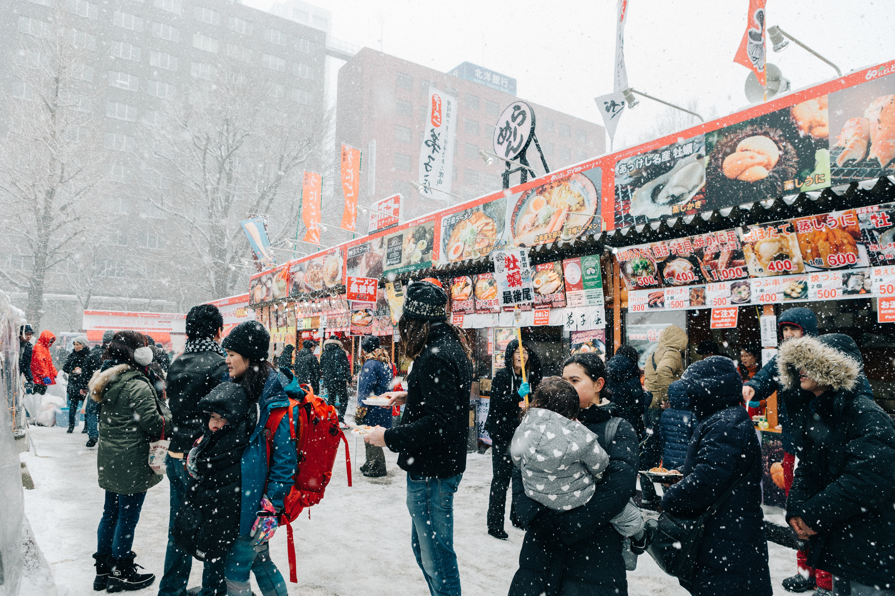
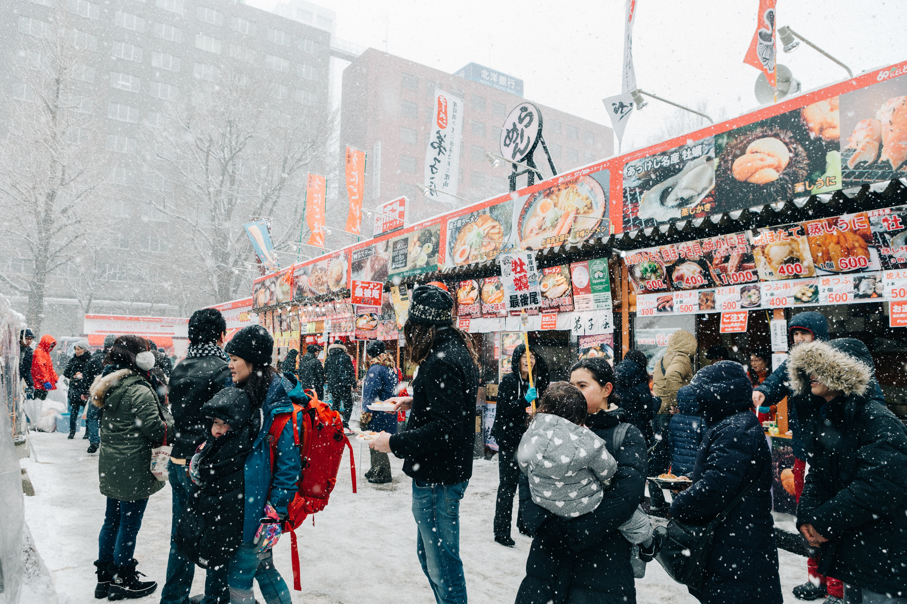
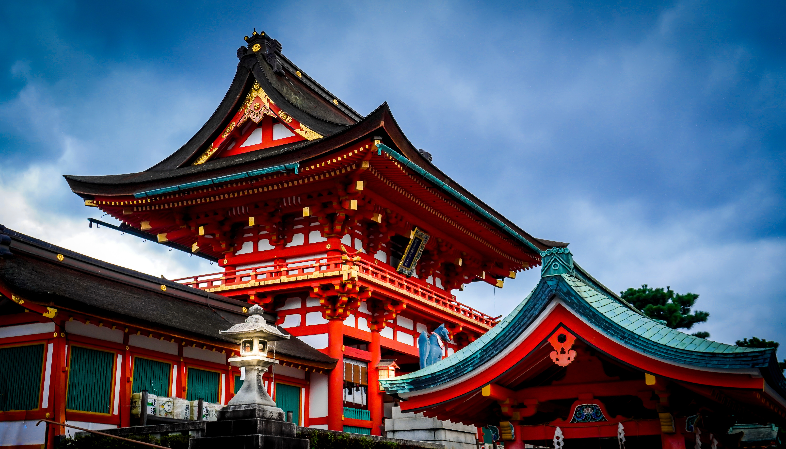
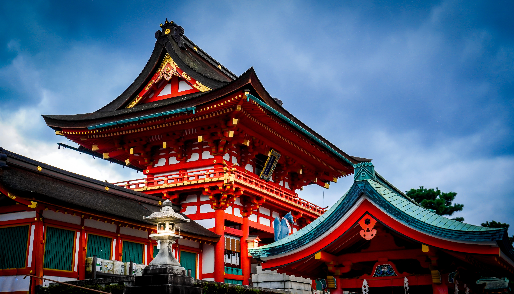
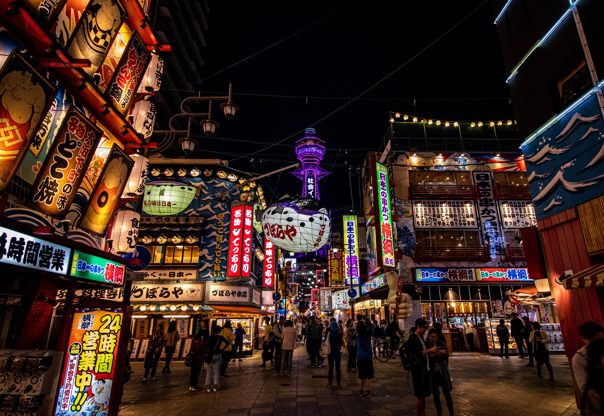
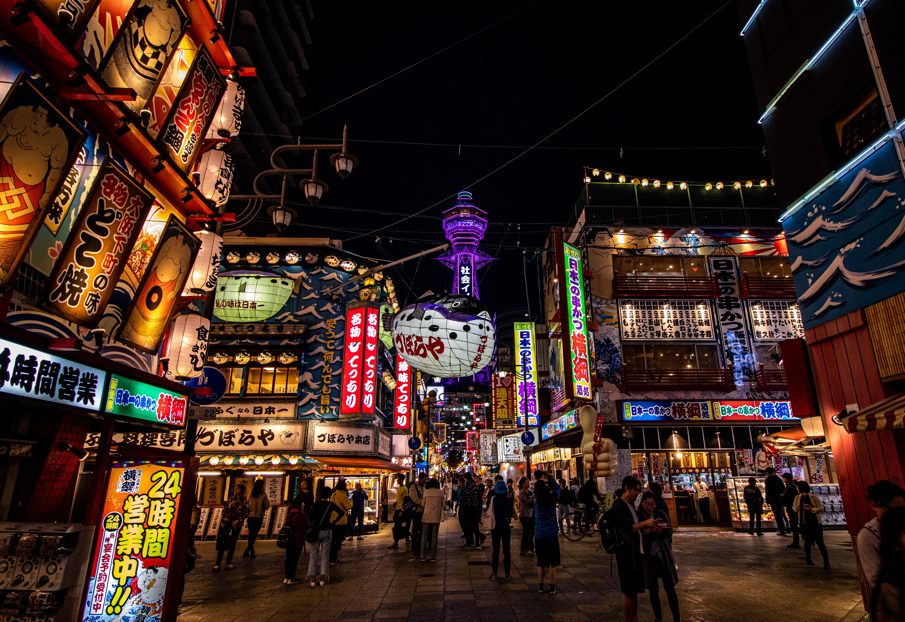

오랜 전통과 세계적인 혁신 기술이 공존하는 나라, 바로 일본입니다. 4개의 주요 섬으로 이루어진 일본은 다양한 기후와 풍경을 자랑하는데요. 북부 지역은 눈 덮인 산이 대부분이지만 남부에는 맑은 호수가 자리한 나가노와 오래된 사찰을 만날 수 있는 교토, 활기 넘치는 수도 도쿄가 있죠. 일본 전역에는 철도망이 잘 조성되어 있어 세계적인 수준의 고속 열차인 신칸센을 타고 남쪽의 아열대 해변에서 최북단의 산맥까지 갈 수 있어요.
스모 경기와 가부키 공연부터 목판화와 다도에 이르기까지 옛 전통을 잘 보존한 일본의 문화를 체험해 보세요. 도쿄에서 즐기는 호화로운 쇼핑이나 교토에서 떠나는 옛 사찰 여행까지, 일본은 남다른 깊이와 미학을 자랑하는 활기 넘치는 국가입니다.
일본의 인기 여행지
다음엔 어디로 떠나세요?
도쿄
도쿄는 일본의 수도이자 독특한 매력으로 전 세계에서 사랑받는 대도시입니다. 약 2,250km²의 면적을 자랑하는 도쿄는 그 자체로 하나의 세계라고 해도 과언이 아니죠. 치안이 좋고 삶의 질이 높기로 유명한 도쿄는 옛것과 새것이 멋진 조화를 이루고 있는데요. 고대 신사 바로 옆에 네온 불빛이 반짝이는 고층 건물이 자리해 독특한 경관을 이룹니다. 도쿄의 매력은 하나로 정의내리기 어렵습니다. 초현대적 감각의 신주쿠와 세련된 시부야 쇼핑 지역에서는...
 

일본의 볼거리 및 놀거리
추천 스토리 및 즐길거리일본이라고 하면 흔히 떠오르는 이미지가 있죠. 하지만 그게 전부가 아닙니다. 독특한 볼거리도 많이 숨어 있어요. 거리를 잠시만 거닐어 보아도 일본에 얼마나 많은 즐길거리가 있는지 확인하실 수 있는데요. 이름만 들어도 호기심을 자극하는 로봇 레스토랑이나 파친코 가게, 쇼핑몰에 들어가시면 색다른 일본의 모습에 눈이 휘둥그레질 거예요. 도심뿐만 아니라 일본을 가로질러 길게 뻗은 산에서도 여러 흥미로운 액티비티를 즐기실 수 있어요. 스키와 스노보드는 물론, 자연 산책로에서 즐기는 하이킹도 일 년 내내 인기가 높은 액티비티입니다.


 

일본의 맛집 및 먹거리
일본에서 즐기는 식사는 일본 여행의 백미라 할 수 있습니다. 일본은 장수 노인이 많은 국가로도 유명하죠. 장수의 비결은 음식에 있다고 해도 과언이 아닌데요. 미식을 즐기기로 유명한 일본의 요리는 재료 본연의 맛을 살려 조리합니다. 한식을 좋아하시는 분이라면 김치찌개나 삼겹살같이 익숙한 한국의 맛을 느낄 수 있는 식당도 있으니 걱정하지 마세요. 친숙한 패스트푸드점이나 영국식 펍도 곳곳에서 찾아보실 수 있습니다. 하지만 군침 도는 와규와 생으로 즐기는 신선한 해산물 등 다채로운 일본 요리를 맛볼 수 있는...


일본에서 살 것과 쇼핑하기 좋은 곳
일본에서 쇼핑은 현대 생활의 필수 요소에요. 메가스토어, 쇼핑몰, 아케이드 상가, 슈퍼마켓 및 작은 세븐일레븐까지도 일상생활에 녹아들어 있어요. 일본의 쇼핑몰은 마치 쇼핑몰이 무엇인가에 대한 새로운 정의를 내리는 것만 같죠. 사람들은 대부분 일본에서의 쇼핑이라고 하면 첨단 전자제품을 먼저 떠올리지만 천으로 만든 훌륭한 제품은 물론 수공예품, 인형, 유리 제품, 그리고 최신 패션 아이템과 액세서리 등 다양한 제품을 찾아보실 수 있습니다. 모든 상품을 100엔 정도의 가격으로 판매하는 백엔 샵도 빼놓을 수 없죠.


일본의 나이트라이프 및 즐기기 좋은 곳
밤이 되면 일본인들은 긴장을 풀고 신나게 놀며 스트레스를 날리는데요. 흥겹게 노는 일본인을 보다 보면 '열심히 일하고 열심히 놀자'라는 말이 생각나실 거예요. 일본 최고의 나이트라이프는 유행을 선도하는 도쿄에서 즐길 수 있지만, 지방 도시에서도 저마다 고유한 매력과 특징이 묻어나는 나이트라이프를 즐길 수 있습니다. 일본의 대표적인 나이트라이프 문화인 가라오케뿐만 아니라 고급 칵테일 바, 나이트클럽, 그리고 친근한 분위기의 이자카야도 인기가 많습니다. 일본에는 비싼 주점도 많지만, 저렴한 이자카야에서는 300엔 정도의 가격으로 맥주를 즐기실...

 
